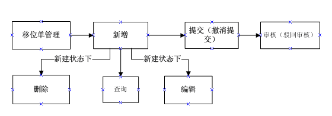
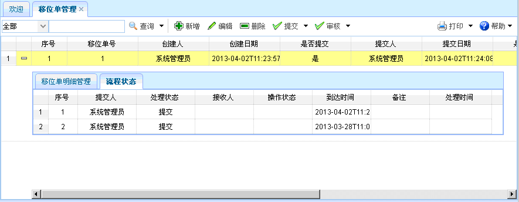
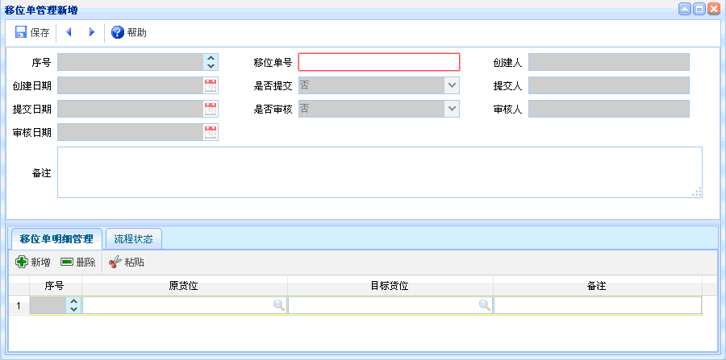
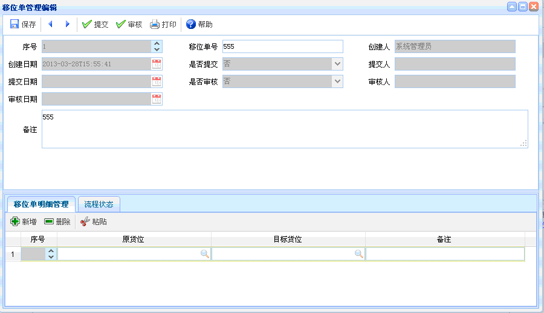

移位单管理
移位单管理
一、概述：移位单管理，对库存中的产品进行移动，就需要建立移位单。必须确认它的原货位和目标货位。
二、流程图演示：如下图所示。

图表【流程图】
图表【流程图】
三、功能介绍：点击【移位单管理】，进入移位单管理页面，还可查看移位单明细和流程状态。 如下图所示。功能主要包括：查询、新增、编辑、删除、提交、审核。

图表4-16-1【移位单管理】
图表4-16-1【移位单管理】
【查询】：通过设置查询条件，查询出符合条件的数据，直接点击查询按钮即可列出相关信息。
【新增】：点击新增按钮，如下图所示。新增完毕，点击保存。新增时，红色文本框为必填，灰色文本框为默认，有搜索图案的要进行查询。可对移位单明细进行新增、删除、粘贴操作，并可查看流程状态。

图表4-16-2【移位单管理新增】
图表4-16-2【移位单管理新增】
【编辑】：选中某项移位单信息，点击编辑按钮后，出现如下图所示内容。对移位单信息进行编辑、提交、审核操作。编辑时，灰色文本框为默认，有搜索图案的要进行查询。还可以对移位单明细进行新增、删除、粘贴操作，并可查看流程状态。

图表4-16-3【移位单管理编辑】
图表4-16-3【移位单管理编辑】
【删除】：选中某项移位单信息后，点击删除，已提交的单据不能删除。
【提交】：选中某项移位单信息后，点击提交，可提交该移位单信息，已提交的单据不能再次提交。
【审核】：选中某项移位单信息后，点击审核，单据审核人不匹配和未提交的移位单信息不能审核。
 注意事项
注意事项
1、提交后不能再次进行编辑，如果需要进行编辑，提交人需撤消提交之后，才能再次进行编辑。
2、审核之前，单据要处于提交状态，审核后想驳回审核，由审核人进行驳回。
 常见问题
常见问题
1、？
2、？
3、？